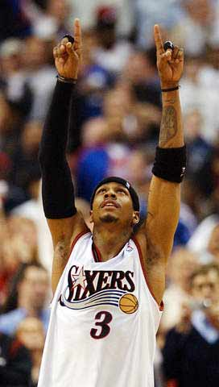
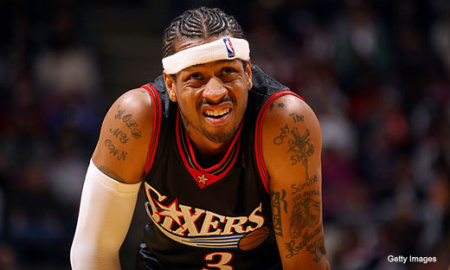
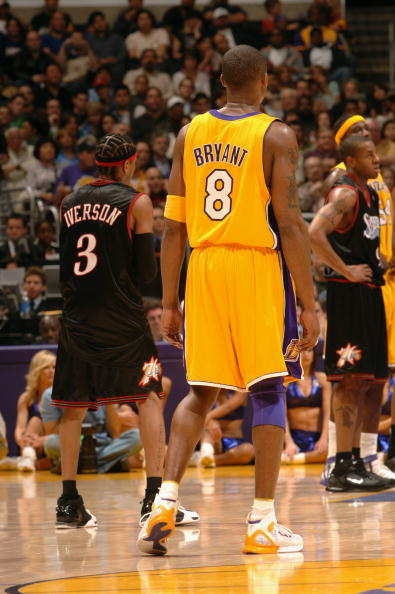
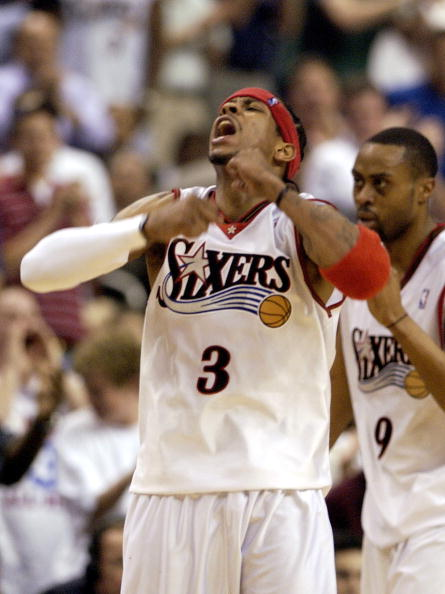

灵魂中的艾弗森
这篇文章的确能称为散文，
毕竟在在这个困难的时期，我想写的太多。
却没法将他们串在一起，姑且这么看吧。
NBA的敌人：
记得我写过一篇文章，叫做只因为我是艾弗森。我的观点和当时一样，艾弗森创造了无数荣誉和记录，76人最佳新秀，MVP，4次得分王，但是如果是另外一个人拥有如此多的荣誉，那他绝对不会有艾此时的窘境。艾弗森此时的景况绝对不是偶然的，而是必然的。艾弗森与其他NBA球星不一样，其他的球星已经学会了迎合，迎合大众，迎合高层。但是艾不会，他出生贫寒，他是个黑人，他始终钟爱嘻哈风格，不爱穿西装，这个习惯一直延续到了NBA。试想，在斯特恩努力为NBA创造一副好孩子满地的面貌的背景下，艾这样的“坏孩子”自然成为众矢之的。媒体和NBA强强联合，在艾进联盟时就不断的制造绯闻，谣言。看看艾现在的情况吧，前MVP，4次得分王，沦落到无人问津，甚至是被裁，换成另外任何一个人，你能想象吗？因为艾的性格，我行我素，桀骜不驯，这注定被NBA所不容，他，阿伦艾弗森，注定是NBA的对立面。

误解：
按艾弗森的话说，他希望他死后将这个词刻在墓碑上。是的，因为他不仅是NBA的敌人，也是误解的代名词。从进联盟前的斗殴事件到进联盟后的种种，他总是被误解。我们有理由相信，创办CROSSOVER基金会，为被杀球迷举办葬礼的艾弗森是一个绝对善良的人。但是在媒体的笔下，他已经成为恶魔的代名词。而这是绝对的误解！
进联盟前涉及斗殴事件，殴打小女孩：上帝，你相信艾弗森这个心比天高的男人会对一个小女孩下手么？
进联盟后，大放厥词：在场上我不用尊重任何人，包括乔丹。然后再比赛中以CROSSOVER晃到乔丹，被称为不尊敬篮球之神：谁都知道，艾弗森最喜欢的歌星是迈克尔杰克逊，而他的偶像就是乔丹。你会不尊敬你的偶像么？？
将老婆裸体赶出家门，持枪进入堂兄家找人：我们来看看艾弗森自己在访谈中的原话吧：“我把我的老婆裸体赶出家门？事实是：我根本不想让任何人看见我老婆的裸体。然后我持枪闯入我堂兄家，他家的房租甚至是我付的。”---------这真是最大的误会和笑话
球队毒瘤：这称为了众多艾黑的黑艾理由，我只能说那些艾黑是球盲。试想在艾在76人的这么多年历程，我们可以说他的进球都是以身体的受伤做代价的，艾黑么，知道艾在01年时吞血比赛的事情么？？退一万步说，艾弗森独，但是你又可曾知道艾场均7次助攻的时候。艾弗森命中率低，你又可知道对艾弗森这个矮个子来说，进球需要多大的勇气和难度？某张对艾已经黑了N年，我想您老大概只知道76人的艾弗森的命中率低，不知道他的队友命中率都比他低。我想即使在艾弗森身前有着大大的空挡，他也只能选择传球，否则就是“你这球他就不合理。”
艾弗森是毒瘤，但这个“毒瘤”在灰熊这个鱼腩球队的两场比赛中，却打出了科比，詹姆斯等“天王巨星”都打不出的效率，艾黑们，不知道你们又如何解释？

坚强，不屈，不弃：
NBA肯定料想不到，会出现阿伦艾弗森这个人。想到这个名字，作为艾迷的我们，第一个想到的词是什么？男人，坚强，斗天。但是如果是斯特恩来提这个名字，肯定是烦恼和头疼。NBA作为一个商业化日益严重的篮球联盟，是成功的。他让多少本来桀骜不驯的新人改变了面貌，让多少嘻哈派乖乖的穿上了西装。但是面对艾弗森时，他们失败了。
艾弗森出生贫寒，从小经历了无数磨难，他的第一双了篮球鞋甚至是母亲用电费去买的。但正是幼年家庭的情况和他的母亲让他学会了坚强。他只有183CM，瘦弱的身体却成为NBA现役球员中上场时间最多的，这需要多么坚强的灵魂来支撑这并不坚强的身躯？
NBA与媒体给了艾13年的压迫，强迫他要成为好孩子，改掉该死的地沟头，穿上西装，去学习科比。可惜的是，艾弗森同样抗争了13年。即使媒体的话语一次比一次恶毒和空穴来风，但这个坚强的男人从来没有妥协过。相信这就是许多艾迷爱他的原因。

信仰与偶像的差别：
如果我对艾迷们说我喜欢乔丹，喜欢奥尼尔甚至喜欢科比，也许会被你们大骂“爱艾就要只喜欢他一个！死他妈的科比，拿什么和艾比？艾弗森，我的信仰！”
我想说，相对于你们来说，我算是一个十分理智的艾迷了。我今年只有17岁，但是同样年龄的人中，如果你和我一样还在家里玩着电脑，那我要说，很少有人能经历的像我这么多。我不是吹牛，也不是炫耀，随便你们怎么说，我只想说，对于我来说，艾在我心中的位置远远超过那些成天说着“我的信仰是AI”，一边说着“艾弗森不准退役，你是神话，比谁都强”的球迷。
我可以说乔丹是我的偶像，他的球技无人可比，我可以说科比是我偶像，他的努力让人敬佩，我可以说奥尼尔是我偶像，他的可爱的率直前无古人，我甚至叫芝麻偶像，至少我很喜欢她（不要想歪了）。但是我绝对不会把艾以外的任何人称为信仰
什么是信仰，是你心中的灯塔，指引你前进，在你困难的时候给你力量，你会无条件的支持他。这就是信仰。我和艾的经历很像，但是我不会在这里大肆宣扬。只想提一下
艾弗森曾经只是我的偶像，我只是崇拜他的球技
但是当我遇到和他一样的困难时，他的坚强让我也学会了坚强，他帮了我三次，每次都是我人生中的巨大转折点，所以，我可以毫不脸红的说，我对艾的爱绝对不会比任何人差，艾不止在我的脑海里，他在我的灵魂里，他对我来说不是一个球员，我可以说，他已经成为我遇到困难时第一个想到的人，每次想到他，总能帮助我度过困难。不管你们觉得矫情不矫情，这是真的
科比，乔丹，这些人，我始终认为只能称之为偶像，而不能成为信仰
在这点上，艾弗森是独一无二的。他的人生，拿出其中的任何一个片段，就足以成为一个传奇
小时候，贫民窟，黑人，穷困潦倒，生来就没有父亲，母亲只有15岁，一人支撑家庭。不爱篮球爱橄榄球，最终选择篮球，为了妹妹的疾病辍学提前进入NBA
进入NBA后，最佳新秀，对神不敬，始终保持着嘻哈风，成为媒体的敌人，开始被误解
01年，经历种种磨难，他带着数十处伤艰难的进入总决赛。你可以去看看当时的录像，你会发现，当时的总决赛之旅就像一场战争，每一场都打得惊心动魄，让人热血沸腾。总决赛之旅，面对强大的湖人，浴血奋战，跨过卢，赢下第一场，打破不败王朝，虽败犹荣。
看看现在吧，你能看到一个183CM的球员全身是伤，被一肘子撞出血，在裁判禁止上场的情况下当场吞血坚持比赛的情景么？绝对不可能，以后也不可能，因为这只有可能是艾弗森。
进入03一代统治的联盟，NBA的JI情开始减少，但你依旧能看到这个已经老去的矮个子像20岁时一样冲进内线，被撞倒在地，然后爬起来坚持比赛。
他的脖子上刻着忠字，他也绝对的衷心，在被费城抛弃后，他亲吻费城的情景同样成为这个现实的NBA中让所有人折服的无双之恋。
而现在，面对媒体的误解和球队的抛弃，这个坚强的老球员却默默的忍受着一切。
这个坚强到难以置信的人，这个衷心到难以置信的人，这个不屈不挠，不会放弃的人，最终由众多球迷的偶像升华成了信仰。
我相信，即使艾弗森不是一个篮球运动员，他的精神也足以折服许多人。这正是我们称他为信仰的原因。

球迷：
现在的球迷大致有几类：
有盲目崇拜的，整天说艾弗森最强的，只有有个人说一句：艾弗森老了，慢了。你便会大骂特骂。我告诉你，艾弗森真的老了
但是更多的球迷会说：即使艾弗森老了，他依旧很强，他还是那么艾弗森。不比科比差
现在，我希望你们说的是：“艾弗森，即使他每场比赛打铁，被盖，得0分。然后被裁，被黑，我依旧喜欢他，因为他是我的信仰，他的伟大不能再用这些无用的数据来衡量了。”
可以么？各位艾迷
不要再怨天尤人，不要再抱怨别人，如果你也觉得对艾的同情是对这个男人的侮辱的话
不要再强求艾一场比赛拿40分，或者拿艾和科比比。如果你在意的是你的偶像数据绝比不上别的偶像，你脸上无光么？那求求你去喜欢科比吧
不要再让艾退役，如果你认为他的确够坚强
记得天使的一句话：沉默观望，是我爱你的方式
如果你是一个了解艾的艾迷，如果你知道艾的精神，艾的性格，那就真真正正的把他放到灵魂里，而不是嘴里。把他当成一个信仰，而不是一个和其他球员相比较的庸俗的人。学会和艾一样坚强的处事，学会相信艾，相信自己的信仰，不对么？
还记得艾的话么？别像个孬种似地愁眉苦脸，站起来，微笑的面对明天。
你会说：“艾弗森好可怜，从来没有见过别的球员这么惨” 是的，因为他是艾弗森
你会说：“艾弗森好坚强，从来没有见过别的球员这么惨还能忍受的了” 是的，因为他是艾弗森
你会说：“艾弗森什么时候才退役，快离开吧，离开这些痛苦。”
那我告诉你，也许别人会放弃，但艾弗森不会。因为他是艾弗森，他不会放弃他的信仰，13年从没放弃过，现在更不会放弃。
“能告诉我艾弗森是什么么？”
“我想说，他不仅是一个人，他还是坚强，不放弃，不屈服”

艾，勿放弃。
同样的，
艾迷，勿放弃。